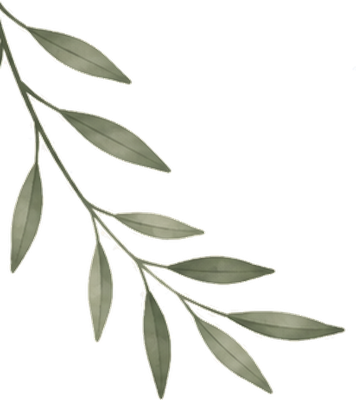

01
Ψυχοθεραπεία Ενηλίκων
Ένας χώρος για να διερευνήσεις τις σκέψεις και τα συναισθήματά σου και να διαχειριστείς τις δυσκολίες που σε απασχολούν.
Αποκλειστικά online

Ψυχολόγος
Ένας χώρος για να μιλήσεις, να κατανοήσεις και να προχωρήσεις.
Ψυχολογική υποστήριξη και ψυχοθεραπευτική προσέγγιση, αποκλειστικά διαδικτυακά.
Βιογραφικό
Είμαι ψυχολόγος με άδεια άσκησης επαγγέλματος και ολοκληρώνω τετραετή ψυχοθεραπευτική εκπαίδευση στη Γνωστική Συμπεριφορική Προσέγγιση (CBT), στην Ελληνική Εταιρεία Έρευνας Συμπεριφοράς – Παράρτημα Μακεδονίας.
Έχω αποκτήσει επαγγελματική εμπειρία μέσα από την παροχή ψυχολογικής υποστήριξης σε διαφορετικές πληθυσμιακές ομάδες, όπως ενήλικες, παιδιά και οικογένειες. Στο πλαίσιο της επαγγελματικής μου πορείας έχω εργαστεί και με ευάλωτες πληθυσμιακές ομάδες, μεταξύ των οποίων ασυνόδευτοι ανήλικοι και ενήλικες ή οικογένειες αιτούντων άσυλο, αποκτώντας εμπειρία στη διαχείριση διαφορετικών ψυχολογικών δυσκολιών και στην εφαρμογή κατάλληλων παρεμβάσεων.
Παράλληλα, έχω παρακολουθήσει επιμορφωτικά σεμινάρια και συνεχίζω να επενδύω στη διαρκή εκπαίδευση και επαγγελματική μου εξέλιξη.
Πραγματοποιώ διαδικτυακές συνεδρίες με ενήλικες και εφήβους, στην ελληνική και αγγλική γλώσσα. Στόχος μου είναι να δημιουργώ ένα ασφαλές και υποστηρικτικό πλαίσιο, όπου κάθε άνθρωπος μπορεί να εκφραστεί ελεύθερα, να αισθανθεί ότι ακούγεται και να διερευνήσει όσα τον απασχολούν με σεβασμό, ενσυναίσθηση και αποδοχή.
Οι συνεδρίες με ενήλικες και εφήβους πραγματοποιούνται αποκλειστικά διαδικτυακά.
Ένας χώρος για να διερευνήσεις τις σκέψεις και τα συναισθήματά σου και να διαχειριστείς τις δυσκολίες που σε απασχολούν.
Αποκλειστικά online
Υποστήριξη των εφήβων στην αναγνώριση και διαχείριση των συναισθημάτων και των προκλήσεων της καθημερινότητας.
Αποκλειστικά online
Ένας χώρος για γονείς που επιθυμούν να κατανοήσουν καλύτερα τις ανάγκες των παιδιών τους και να ενισχύσουν την επικοινωνία μαζί τους.
Αποκλειστικά online
Διαδικτυακές συνεδρίες
Ευελιξία στον προγραμματισμό των συνεδριών.
Πρόσβαση από οποιαδήποτε περιοχή.
Εξοικονόμηση χρόνου από τις μετακινήσεις.
Δυνατότητα πραγματοποίησης της συνεδρίας από έναν οικείο και άνετο χώρο.
Ευκολότερη προσαρμογή της θεραπείας στην καθημερινότητα.
Πριν ξεκινήσουμε
Η Γνωστική Συμπεριφορική Θεραπεία είναι μια δομημένη, συνεργατική και επιστημονικά τεκμηριωμένη ψυχοθεραπευτική προσέγγιση. Εστιάζει στη σύνδεση ανάμεσα στις σκέψεις, τα συναισθήματα και τις συμπεριφορές μας, βοηθώντας στην αναγνώριση μοτίβων που μπορεί να επηρεάζουν την καθημερινότητά μας.
Η διαδικτυακή θεραπεία προσφέρει ευελιξία και τη δυνατότητα πρόσβασης στην ψυχολογική υποστήριξη ανεξάρτητα από τον τόπο διαμονής. Παράλληλα, εξοικονομεί χρόνο από τις μετακινήσεις και επιτρέπει τη συμμετοχή στη συνεδρία από έναν οικείο και άνετο χώρο.
Οι συνεδρίες πραγματοποιούνται μέσω κατάλληλης πλατφόρμας βιντεοκλήσης. Έχουν αντίστοιχη δομή και διάρκεια με τις δια ζώσης συνεδρίες και προϋποθέτουν έναν ιδιωτικό χώρο, όπου μπορείς να συμμετέχεις με άνεση και ασφάλεια.
Η διάρκεια κάθε συνεδρίας είναι 50 λεπτά.
Συνήθως οι συνεδρίες πραγματοποιούνται σε εβδομαδιαία βάση, καθώς η σταθερότητα και η συνέχεια συμβάλλουν στη θεραπευτική διαδικασία. Η συχνότητα μπορεί να προσαρμόζεται ανάλογα με τις ανάγκες και το αίτημα κάθε ατόμου.
Σε περίπτωση που χρειαστεί να ακυρώσεις ή να μεταφέρεις μια συνεδρία, είναι σημαντικό να υπάρχει ενημέρωση όσο το δυνατόν νωρίτερα. Ακυρώσεις που πραγματοποιούνται σε διάστημα μικρότερο των 24 ωρών από την προγραμματισμένη συνεδρία χρεώνονται.
Η πρώτη συνεδρία αποτελεί μια ευκαιρία γνωριμίας. Θα συζητήσουμε για όσα σε απασχολούν, το αίτημα και τις προσδοκίες σου, ενώ θα έχεις την ευκαιρία να ενημερωθείς για τον τρόπο και το πλαίσιο της συνεργασίας μας.
Σε περίπτωση καθυστέρησης, η συνεδρία ολοκληρώνεται στην αρχικά προγραμματισμένη ώρα, περιορίζοντας αντίστοιχα τον διαθέσιμο χρόνο. Σε περίπτωση απουσίας ή ακύρωσης, εφαρμόζεται η πολιτική ακυρώσεων.
Η εμπιστευτικότητα αποτελεί θεμελιώδη αρχή της θεραπευτικής σχέσης. Οι πληροφορίες που μοιράζεσαι παραμένουν εμπιστευτικές, με τις εξαιρέσεις που προβλέπονται από τη νομοθεσία και τους επαγγελματικούς κανόνες δεοντολογίας, όπως σε περιπτώσεις σοβαρού κινδύνου.
Επικοινωνία
Για οποιαδήποτε πληροφορία ή για να προγραμματίσεις την πρώτη σου συνεδρία, μπορείς να επικοινωνήσεις μαζί μου. Θα χαρώ να απαντήσω στις ερωτήσεις σου.
ΝΑ ΠΡΟΣΤΕΘΕΙ
Τηλέφωνο
ΝΑ ΠΡΟΣΤΕΘΕΙ
ΝΑ ΠΡΟΣΤΕΘΕΙ
Συνεδρίες
Αποκλειστικά διαδικτυακά
Λειτουργία demo. Η φόρμα δεν είναι ακόμη συνδεδεμένη με μηχανισμό αποστολής και δεν στέλνει μηνύματα.
Παρακαλούμε μην συμπεριλαμβάνεις ευαίσθητες πληροφορίες υγείας σε αυτή τη φόρμα. Τα θέματα που σε απασχολούν θα τα συζητήσουμε στη συνεδρία.
Το μήνυμα είναι έτοιμο σε αυτή τη σελίδα.
Λειτουργία demo. Η φόρμα δεν είναι ακόμη συνδεδεμένη με μηχανισμό αποστολής και δεν στέλνει μηνύματα.